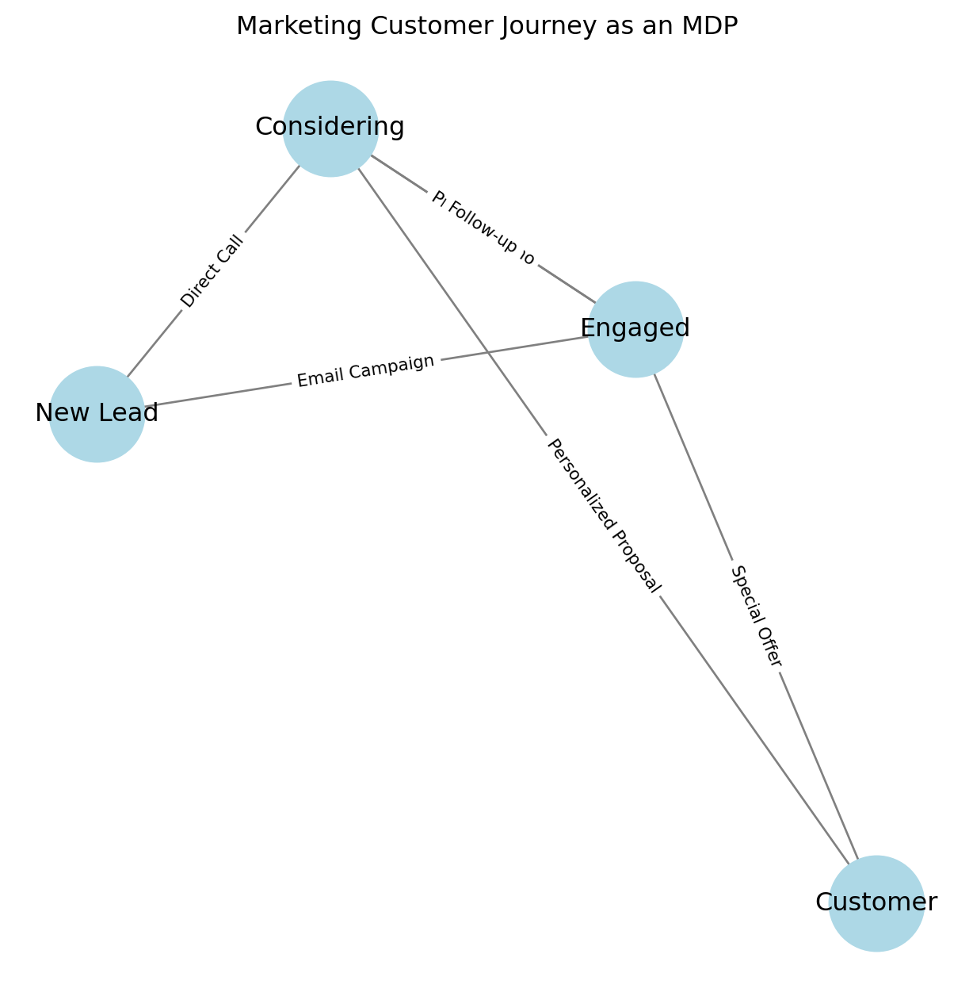

Markov Decision Processes (MDPs) might sound like a complex mathematical concept, but they’re incredibly useful for making decisions in uncertain environments. In this post, we’ll explore how MDPs can be applied to marketing decisions, making it easier to understand both the concept and its practical applications.
What is a Markov Decision Process?
An MDP is a mathematical framework for modeling decision-making where outcomes are partly random and partly controlled by a decision-maker. Think of it as a formalized way to make decisions when:
You have different states your system can be in
You can take various actions
The outcomes of your actions are somewhat uncertain
You receive rewards (or incur costs) based on your decisions
Let’s visualize this with Python:
import networkx as nximport matplotlib.pyplot as pltdef create_marketing_mdp(): G = nx.DiGraph()# Define states states = ['New Lead', 'Engaged', 'Considering', 'Customer']# Add nodesfor state in states: G.add_node(state)# Add edges with actions edges = [ ('New Lead', 'Engaged', 'Email Campaign'), ('New Lead', 'Considering', 'Direct Call'), ('Engaged', 'Considering', 'Product Demo'), ('Engaged', 'Customer', 'Special Offer'), ('Considering', 'Customer', 'Personalized Proposal'), ('Considering', 'Engaged', 'Follow-up'), ] G.add_edges_from([(x[0], x[1]) for x in edges])# Create layout pos = nx.spring_layout(G)# Draw the graph plt.figure(figsize=(8, 8)) nx.draw_networkx_nodes(G, pos, node_color='lightblue', node_size=2000) nx.draw_networkx_edges(G, pos, edge_color='gray', arrows=True, arrowsize=20) nx.draw_networkx_labels(G, pos)# Add edge labels edge_labels = {(x[0], x[1]): x[2] for x in edges} nx.draw_networkx_edge_labels(G, pos, edge_labels, font_size=8) plt.title("Marketing Customer Journey as an MDP") plt.axis('off') plt.show()create_marketing_mdp()

A Marketing Example: Customer Journey Optimization
Let’s break down a concrete marketing example:
States
In our customer journey, we have four main states: 1. New Lead 2. Engaged 3. Considering 4. Customer
Actions
For each state, we have different possible marketing actions: - Email campaigns - Direct calls - Product demos - Special offers - Personalized proposals - Follow-ups
Transition Probabilities
Let’s model some example transition probabilities:
The rewards in our marketing MDP could include: - Revenue from converted customers - Minus the cost of marketing actions - Long-term customer value considerations
Implementing an MDP Solver
Here’s a simple value iteration implementation for our marketing MDP:
def value_iteration(states, actions, transitions, rewards, discount_factor=0.9):# Initialize value function V = {state: 0for state in states} theta =0.01# Convergence thresholdwhileTrue: delta =0 V_new = V.copy()for s in states:if s =='Customer': # Terminal statecontinue# Find maximum value over all actions values = []for a in actions: v =0# Sum over all possible next statesfor s_next in states:# Simplified transition probability prob =0.3# Example probability reward = rewards.get((s, a, s_next), 0) v += prob * (reward + discount_factor * V[s_next]) values.append(v) V_new[s] =max(values) delta =max(delta, abs(V_new[s] - V[s])) V = V_newif delta < theta:breakreturn V# Example usagestates = ['New Lead', 'Engaged', 'Considering', 'Customer']actions = ['Email Campaign', 'Direct Call', 'Product Demo', 'Special Offer']rewards = { ('New Lead', 'Email Campaign', 'Engaged'): -10, ('New Lead', 'Direct Call', 'Considering'): -50, ('Engaged', 'Product Demo', 'Considering'): -100, ('Engaged', 'Special Offer', 'Customer'): 800,}optimal_values = value_iteration(states, actions, None, rewards)print("\nOptimal Values for Each State:")for state, value in optimal_values.items():print(f"{state}: {value:.2f}")
Optimal Values for Each State:
New Lead: 341.01
Engaged: 581.01
Considering: 341.01
Customer: 0.00
Practical Implications
Using MDPs in marketing offers several advantages:
Systematic Decision Making: Instead of gut feelings, decisions are based on data and expected outcomes.
Long-term Optimization: The discount factor helps balance immediate returns with long-term value.
Risk Management: Probability distributions help account for uncertainty in customer behavior.
Resource Allocation: Understanding the value of each state helps optimize marketing budget allocation.
Conclusion
MDPs provide a powerful framework for optimizing marketing decisions. While the math might seem complex, the underlying concept is straightforward: make decisions that maximize expected long-term rewards while accounting for uncertainty.
References
Puterman, M. L. (2014). Markov Decision Processes: Discrete Stochastic Dynamic Programming.
Russell, S., & Norvig, P. (2020). Artificial Intelligence: A Modern Approach.